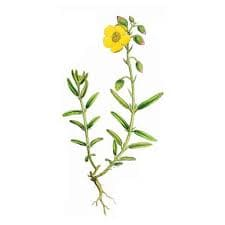
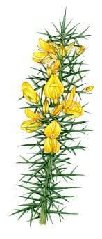

Algunos tipos de flores
En los siguientes desplegables vera las flores correspondientes a cada grupo:
Rock rose
Mimulus
Cherry plum
Aspen
Red chestnut

Cerato
Scleranthus
Gentian
Gorse
Hornbeam

Chesnut Bud
Clematis
Honeysuckle
Mustard
Olive
White Chestnut
Wild Rose
Heather
Impatiens
Water Violet
Agrimony
Centaury
Holly
Walnut
Crab Apple
Elm
Larch
Oak
Pine
Star of Bethlehem
Sweet Chestnut
Willow
Beech
Chicory
Rock Water
Vervain
Vine